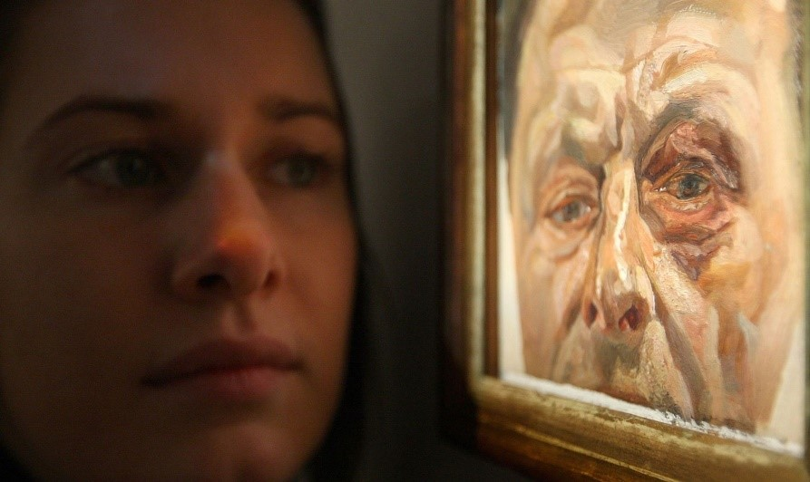
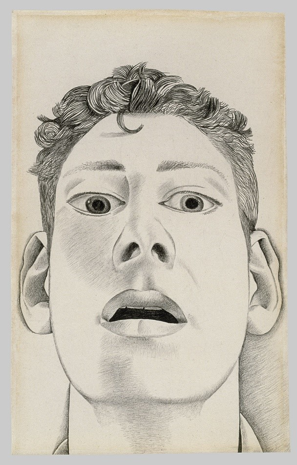

The artist’s altercation with a cab driver produced one of many revealing paintings being exhibited at the Royal Academy of Arts.
Thwack! We’ll never know the sound of the punch that once gave Lucian Freud a black eye, but we certainly know the shape, texture and colour of the bruise it left, thanks to a carefully worked oil painting, Self-portrait with a Black Eye (1978). The small canvas was painted after the artist had an altercation with a taxi driver in the late 1970s.
“It’s quite interesting that his reaction [to the black eye] is to go back and paint it,” says Andrea Tarsia, the co-curator of Lucian Freud: the Self-portraits at the Royal Academy of Arts. “He sees the bruising and swelling of skin as something fascinating to paint.”
The painting, which sold at auction in 2010 for £2.8m, is one of around 50 works charting more than six decades of Freud’s career. The exhibition will include early works where he “often represents himself either in disguise [or via] partial views” through to the 1960s when he “makes it more explicit that he painted using a mirror [and] becomes quite interested in a game of reflections, surface, depth and illusion,” Tarsia says. “And then later in life [the self-portraits] become laced with the more existential dimension, where you can see a preoccupation with conveying his ageing skin in paint.”
For Freud, self-portraits were “a way of working things out, a way of taking a break—they do come at certain moments in his development as a painter,” Tarsia says. And because Freud “didn’t really talk about artists who were important to him until later in his career”, they can often be the key to helping understand his influences, whether “intentionally or unintentionally,” Tarsia says. For example, the early drawing Startled Man: Self-portrait (1948) “makes you think of Courbet’s The Desperate Man,” he adds.
The show is supported by Phillips auction house and Offer Waterman gallery, and is organised in collaboration with the Museum of Fine Arts, Boston, where it will travel to next year.